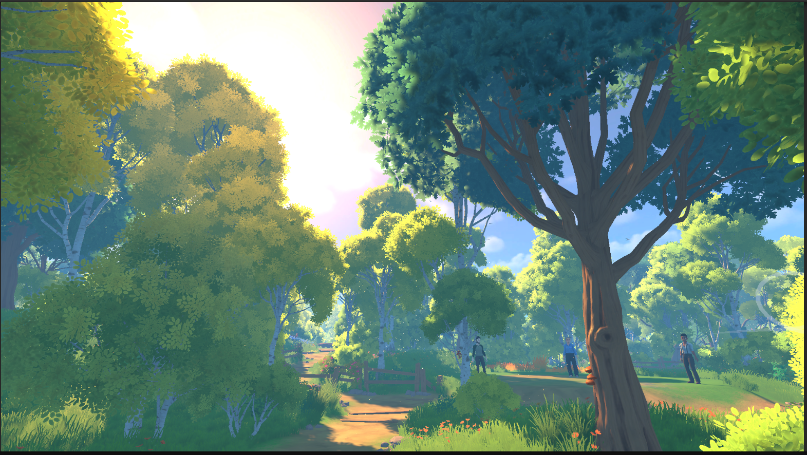
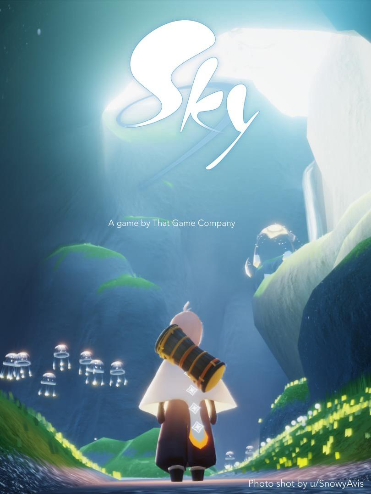
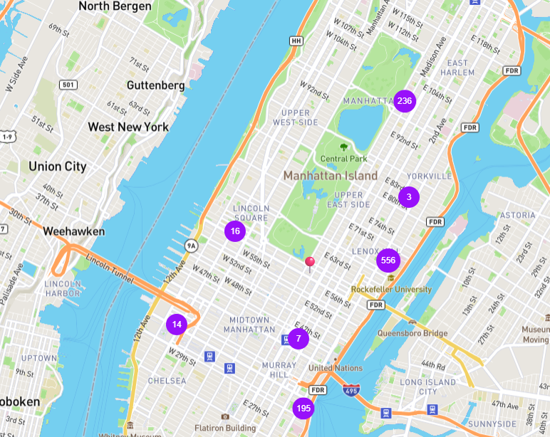
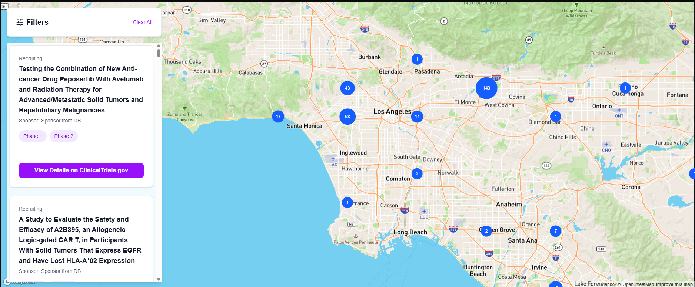
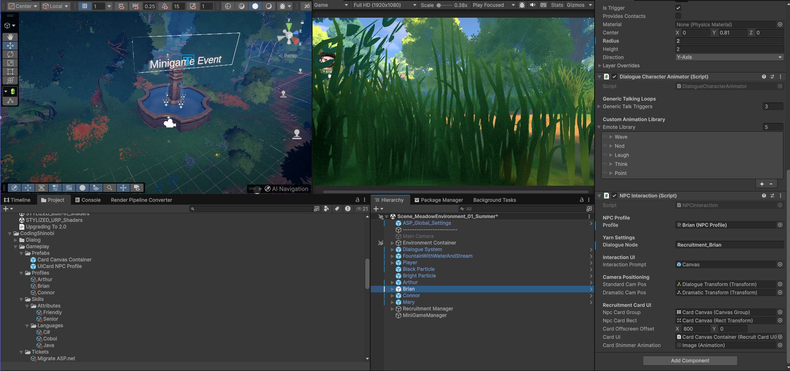
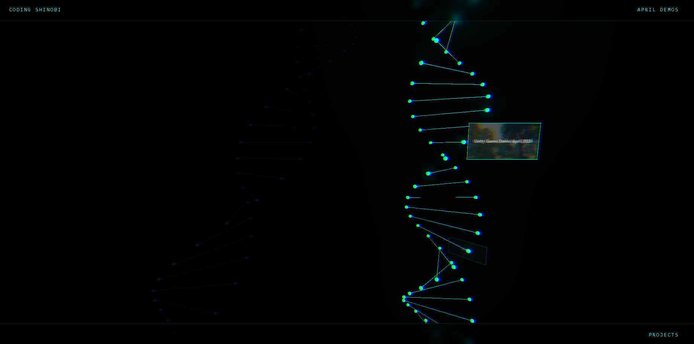

FIELD SYSTEMS / 2018+
Distributed IoT network
Multi-architecture edge nodes, durable telemetry, custom overlay networking, and reproducible deployments in hostile environments.
Read the architecture story ↗An evolving practice 2000s—Now
From first programs and webpages to distributed platforms, simulated worlds, and technical leadership. Scroll through the traits that stayed.
01 / Lineage
The early work was direct: write the code, make the interface respond, ship the idea. The methods changed. The instinct to build did not.
Then A site was a collection of effects.
Now Motion is part of the narrative.
02 / Systems
Applications became services. Services met unreliable networks, heterogeneous devices, high-volume data, and real operational constraints.
FIELD SYSTEMS / 2018+
Multi-architecture edge nodes, durable telemetry, custom overlay networking, and reproducible deployments in hostile environments.
Read the architecture story ↗DATA AT SCALE
Self-serve analyst software and scalable pipelines processing up to 1 TB per minute while reducing annual operating cost.
HPC · Spark · Python · Qt03 / Simulated worlds
Engineering crossed into real-time simulation: orbital mechanics, inverse kinematics, finite element analysis, shaders, and data-driven gameplay.


Integrated simulation techniques into Unreal Engine for advanced digital twins—work that contributed to three new deals and a Phase II SBIR contract.
04 / Architecture & leadership
First a function. Then a service. Then a platform, a team, a budget, a roadmap, and the responsibility to keep them aligned.
Ship under pressure. Improve codebases. Document the decisions.
Choose stacks, shape solutions, unblock people, and design for change.
Balance requirements, budgets, delivery, maintenance, and teams at scale.
Selected evidence
Not a complete inventory. A cross-section of problems, domains, and forms.

Architecture / Edge

Platform / Data
Simulation / XR

Application / Health

Interactive / Game

Meta / Archive
05 / Current form
I build across the boundary between software, data, simulation, infrastructure, and organizations—then make those parts work as one system.